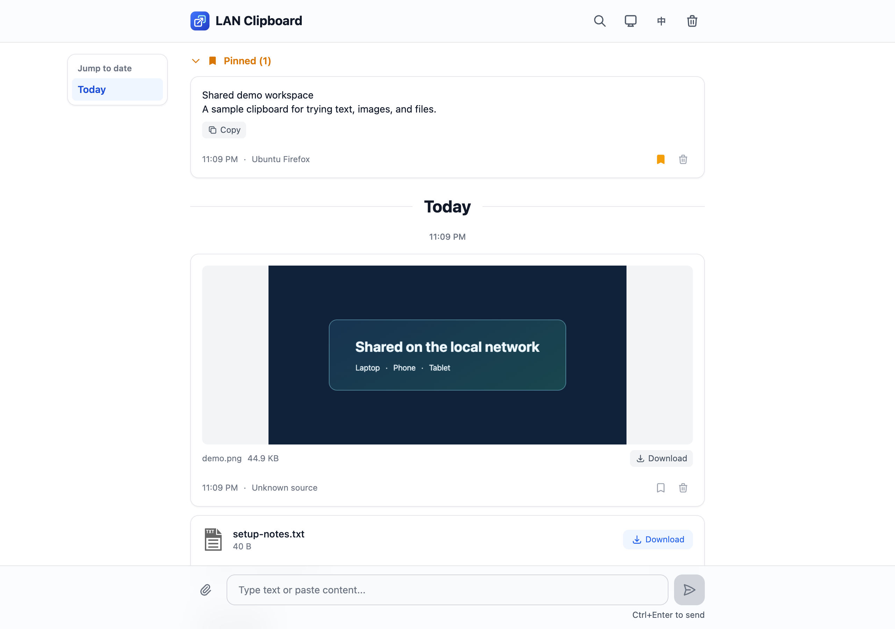
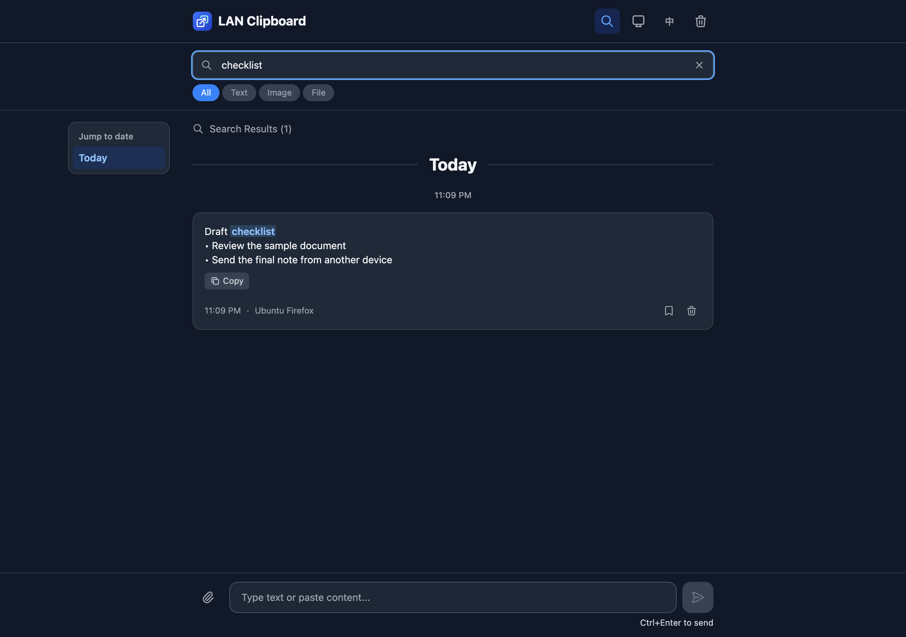
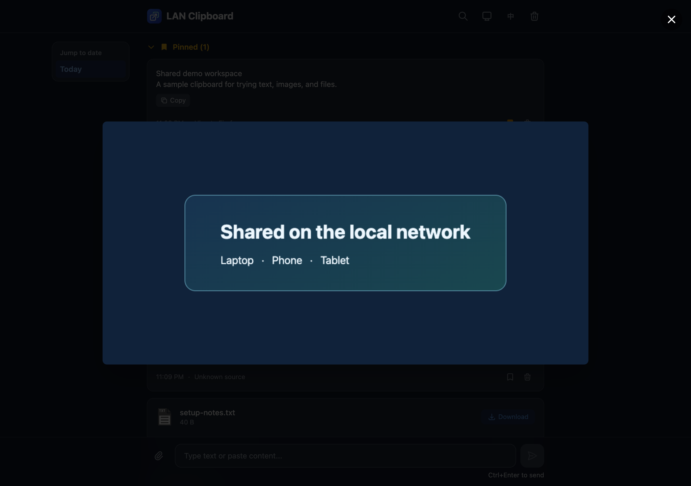
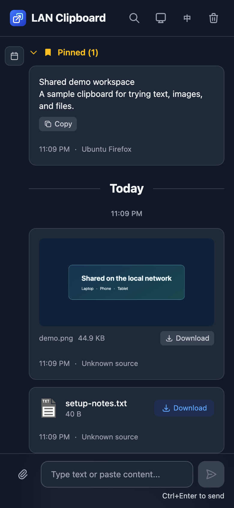

技术架构文档
LAN Clipboard局域网剪贴板 · 跨设备实时共享
任意设备打开网页，粘贴文本、上传图片或文件，同一局域网内的其他设备通过 WebSocket 实时收到。单进程部署、数据留在家中、无需账号与云服务。

桌面端浅色主题 · 实际运行界面
（含 1,021 行测试）
+ WebSocket 端点
覆盖 store / API / WS
即可完成配置
无外部服务
01整体架构
一个 Go 进程，托起全部状态与实时通道
服务端是一个编译好的 Go 二进制：同时提供 REST API、WebSocket 实时通道与前端静态页面。数据落在本地 SQLite（WAL 模式）和上传目录中，没有 Redis、消息队列、对象存储或外部数据库。
提示：在小屏幕上可左右滑动查看完整架构图。
CLIENT客户端
React 18 单页应用，构建后就是几个静态文件。
- TypeScript 严格模式，
tsc --noEmit零错误才允许构建 - Zustand 集中管理列表、置顶、搜索、分页与统计
- REST 负责读写，WebSocket 负责“别人改了”的推送
- 中 / 英双语、浅色 / 深色 / 跟随系统三档主题
- 断线指数退避重连（1s → 30s），重连后自动重拉数据
SERVER服务端
一个 Go 进程提供页面、API 和 WebSocket，内置 SQLite 持久化。
- Gin 路由：4 组 Handler 分别处理剪贴、文件、搜索与 WebSocket
- SQLite 访问层封装 CRUD、游标分页、全文搜索与过期清理
- WebSocket Hub 以 channel 驱动，向所有在线设备广播变更
- 文件名清洗、路径穿越防护、大小限制、优雅关闭
- 仅 5 个直接依赖（Gin / WebSocket / SQLite / UUID / 图像处理）
STORE存储
单机文件系统即全部持久化层，可直接打包迁移。
clipboard.db：SQLite（WAL 模式）+ FTS5 虚表与 3 个同步触发器uploads/YYYY/MM/DD/：UUIDv7 前缀的原文件与缩略图- 非置顶内容保留 30 天，每天 03:00 自动清理数据库记录与磁盘文件
- 前端构建产物
server/static由同一进程托管，SPA 路由回退到 index.html
部署只需三样东西：一个 Go 二进制（约 18.5 MB）、一个静态目录、一个数据目录。没有外部服务需要编排，这也是后续 Docker 化非常轻量的根本原因。
构建顺序：前端 tsc + vite build → 复制到 server/static → Go 以 CGO + sqlite_fts5 标签编译出单个可执行文件。
02关键数据流
四条主线，串起整个应用
所有写操作都是「先落库、再广播」：数据库是唯一事实来源，WebSocket 只负责把变更推给其他在线设备。下面四条流程覆盖了日常使用的全部路径。
文本剪贴 · 从输入到其他设备 clip.go
{ content }，长度不得超过 300 KB。文件上传 · 落盘与缩略图 file.go
files 或 file；超过 32 MB 的部分自动落到临时文件，不会整包驻留内存。{data}/uploads/YYYY/MM/DD/uuid_原名；随后写数据库，若入库失败会回滚已落盘的文件。实时广播 · 连接与重连 ws/
全文搜索 · 中文与子串友好 sqlite.go
% _ \。取舍说明：搜索每次会额外扫一遍 clips 表做 LIKE。在默认 30 天保留期、家庭规模的数据量下开销可以忽略；若未来数据量增长到十万级，再引入 FTS5 的 trigram 分词器或独立搜索索引即可。
03技术栈
刻意的“小”：每层只选一个够用的工具
技术选型围绕「家庭服务器可长期无人值守」展开：能少一个进程就少一个进程，能少一个依赖就少一个依赖。
| 层 | 技术 | 版本 | 职责与理由 |
|---|---|---|---|
| 后端语言 | Go | go 1.27.4+ | 编译为单个应用进程，提供静态文件、API 和 WebSocket |
| HTTP 框架 | Gin | v1.10.0 | 路由组、参数绑定、中间件与静态文件托管，生态成熟 |
| 实时通道 | gorilla/websocket | v1.5.3 | 标准 WebSocket 实现，配合自研 Hub 做广播与慢客户端剔除 |
| 存储 / 搜索 | SQLite + FTS5 mattn/go-sqlite3 | v1.14.24 | 单文件数据库、零运维；FTS5 提供全文索引，需 CGO 与 sqlite_fts5 构建标签 |
| 图片处理 | disintegration/imaging | v1.6.2 | 大图缩略图生成（自动方向校正、Lanczos 缩放、JPEG 质量 85） |
| 唯一 ID | google/uuid | v1.6.0 | UUIDv7：时间有序，利于游标分页与按时间排序 |
| 前端框架 | React + TypeScript | 18.3 / 5.6 | 组件化 UI；严格模式类型检查作为构建前置门槛 |
| 构建工具 | Vite | 5.4 | 开发态热更新 + 生产态小体积产物；/api 与 /ws 代理到 :8080 |
| 样式 / 状态 / 国际化 | Tailwind CSS · Zustand · i18next | 3.4 · 5.0 · 23 | 原子化样式、轻量集中状态、中英文文案 |
| 构建编排 | Makefile | — | 一条 make build 完成前端产物 + CGO 后端编译，make test / smoke / vet 兜底质量 |
为什么是 Go
- 单二进制，无运行时依赖
- goroutine 天然适合 WebSocket 泵与定时任务
- 单二进制适合容器化；CGO 依赖需在目标架构内构建
为什么是 SQLite
- 一个文件即数据库，备份 = 复制文件
- WAL 模式兼顾读写并发
- FTS5 内建全文索引，不需要 Elasticsearch
为什么是 WebSocket
- 剪贴板需要“秒级送达”而非轮询
- 双向长连接，服务端可主动推送
- 断线重连 + 重连补拉即可获得最终一致
为什么是 React + Vite
- 交互密集，组件化收益明显
- Vite 构建产物仅数百 KB
- TS 严格模式替代一部分测试职责
04数据模型
一张主表 + 一张 FTS5 虚表，够用且可搜索
所有内容统一建模为 Clip：文本、图片、文件共用一张表，用 type 区分，文件元数据冗余进主表，避免额外的关联查询。
clips 主表 10 列 + 2 索引
| 列 | 类型 | 说明 |
|---|---|---|
| id | TEXT PK | UUIDv7，时间有序 |
| type | TEXT | text / image / file |
| content | TEXT | 文本内容（图片 / 文件为空） |
| file_name | TEXT | 清洗后的原始文件名 |
| file_path | TEXT | 服务端存储路径（JSON 不返回） |
| file_size | INTEGER | 字节数，用于容量统计 |
| mime_type | TEXT | 决定 inline / attachment |
| has_thumb | INTEGER | 是否有缩略图 |
| pinned | INTEGER | 置顶标记，永不自动清理 |
| created_at | DATETIME | UTC，强制固定格式便于字符串比较 |
另有 2 个索引：created_at DESC（列表 / 游标）与 pinned（置顶查询）。fileUrl / thumbUrl 是返回时计算的字段，不落库。
FTS5 全文索引 content='clips'
外部内容表（external content）模式：FTS 虚表不复制正文，只存倒排索引，主表通过 rowid 关联。
clips_fts(content, file_name)— 搜索文本内容与文件名- 3 个触发器（
AI / AD / AU）在增、删、改时自动同步索引 - 搜索时 FTS5 命中 ∪ LIKE 子串命中，兼顾分词质量与中文 / 前缀体验
- 索引随主表事务一起提交，不会出现“搜到已删除内容”
磁盘布局 DATA_DIR
{DATA_DIR}/
├── clipboard.db # SQLite（WAL 模式）
├── clipboard.db-wal # 预写日志（运行时）
├── clipboard.db-shm # 共享内存（运行时）
└── uploads/
└── 2026/10/22/
├── <uuid>_photo.png
├── <uuid>_photo_thumb.jpg
└── <uuid>_notes.txt// 主表
CREATE TABLE IF NOT EXISTS clips (
id TEXT PRIMARY KEY,
type TEXT NOT NULL,
content TEXT NOT NULL DEFAULT '',
file_name TEXT NOT NULL DEFAULT '',
file_path TEXT NOT NULL DEFAULT '',
file_size INTEGER NOT NULL DEFAULT 0,
mime_type TEXT NOT NULL DEFAULT '',
has_thumb INTEGER NOT NULL DEFAULT 0,
pinned INTEGER NOT NULL DEFAULT 0,
created_at DATETIME NOT NULL DEFAULT (datetime('now'))
);
CREATE INDEX IF NOT EXISTS idx_clips_created_at ON clips(created_at DESC);
CREATE INDEX IF NOT EXISTS idx_clips_pinned ON clips(pinned);
-- 全文索引：外部内容模式，不为正文冗余存储
CREATE VIRTUAL TABLE IF NOT EXISTS clips_fts USING fts5(
content, file_name,
content='clips', content_rowid='rowid'
);
-- 增 / 删 / 改三个触发器保持倒排索引与主表一致
CREATE TRIGGER IF NOT EXISTS clips_ai AFTER INSERT ON clips BEGIN
INSERT INTO clips_fts(rowid, content, file_name)
VALUES (new.rowid, new.content, new.file_name);
END;
-- clips_ad（DELETE）与 clips_au（UPDATE）同理游标分页，而不是 OFFSET
WHERE pinned = 0 ORDER BY created_at DESC LIMIT 21。created_at < cursor新内容不断插入也不会重复或漏读，这是置顶区之外唯一的翻页方式。自动清理策略
- 非置顶内容默认保留 30 天（
CLIP_RETENTION_DAYS可调） - 后台协程每天 03:00（服务器本地时区）触发一次
- 先查过期记录 → 事务内删除 → 再删磁盘原文件与缩略图
- 每删除一条，向在线设备广播
clip_deleted，列表实时消失 - 置顶内容不受清理影响，相当于“永久收藏”
05API 与实时协议
12 个 REST 端点 + 1 条 WebSocket 通道
接口全部同源相对路径，无鉴权头、无 Token 交换；错误统一返回 { "error": "..." }。分页、上传、文件下载、统计都有独立端点。
| 方法 | 路径 | 说明 | 响应 |
|---|---|---|---|
| POST | /api/clips | 新建文本剪贴（≤ 300 KB） | 201 {clip} |
| GET | /api/clips?cursor=&limit=&type= | 非置顶列表，游标分页（limit 默认 20，上限 50） | {clips, hasMore, nextCursor} |
| GET | /api/clips/pinned | 全部置顶内容（不分页） | {clips} |
| GET | /api/clips/search?q=&type= | FTS5 + 子串双通道搜索，最多 50 条 | {clips} |
| POST | /api/clips/upload | multipart 上传，字段 files / file，逐文件成条 | 201 {clips} |
| GET | /api/clips/:id | 单条详情 | {clip} / 404 |
| PATCH | /api/clips/:id | 更新置顶：{"pinned": true|false} | {clip} |
| DELETE | /api/clips/:id | 删除单条，同时删除磁盘文件与缩略图 | {message} |
| DELETE | /api/clips | 清空全部（含所有磁盘文件） | {message, count} |
| GET | /api/files/*filepath | 原文件；图片 inline、其他 attachment，文件名去掉 UUID 前缀 | 文件流 |
| GET | /api/thumbnails/*filepath | 800px JPEG 缩略图 | image/jpeg |
| GET | /api/stats | 存储统计，也用作容器健康检查端点 | {totalClips, totalSize} |
| WS | /ws | 实时事件通道（服务端推送为主，客户端仅发心跳） | JSON 帧 |
WebSocket 事件
| type | data | 触发时机 |
|---|---|---|
| clip_created | 完整 Clip | 新建文本 / 每个文件上传成功 |
| clip_updated | 完整 Clip | 置顶状态变更 |
| clip_deleted | { id } | 单条删除 / 自动清理 |
| clips_cleared | null | 一键清空 |
{
"type": "clip_created",
"data": {
"id": "0192f3c1-7a2e-7d3b-...",
"type": "text",
"content": "随手记一条",
"pinned": false,
"createdAt": "2026-10-22T06:31:00.123Z"
}
}06前端架构
一层布局、一个 store、四个 Hook
前端不做复杂路由，整页就是「头部 + 列表 + 输入框」三段式布局。服务端返回的状态由 Zustand 统一持有，组件只负责渲染与交互。
组件树
App.tsx— 布局 / 上传 / 拖拽 / Toast / 图片灯箱Header— 标题 · 连接状态 · 搜索 · 主题 · 语言 · 统计 · 清空SearchBar— 300ms 防抖 · 类型筛选StatusBadge / ThemeToggle / LanguageSwitch
ClipList— 置顶区 + 按日期分组 + 无限滚动PinnedSection→ClipCardDateGroup→ClipCardClipCard→TextClip / ImageClip / FileClip
InputArea— 文本 · Ctrl/⌘+Enter · 选择文件 · 上传进度DropZone— 全屏拖拽遮罩ImagePreview / Toast / ConfirmDialog / UploadProgress
状态与数据层
| 模块 | 职责 |
|---|---|
| store/clipStore.ts | Zustand：clips / pinnedClips / cursor / hasMore / searchQuery / searchResults / filterType / stats，以及 add / remove / update / clear / fetch 动作 |
| hooks/useWebSocket.ts | 管理连接生命周期，把 4 类事件分发到 store |
| api/ws.ts | WebSocketClient：指数退避重连、30s 心跳、状态回调 |
| api/clips.ts | REST 封装；上传使用 XHR 以获得进度回调 |
| hooks/useInfiniteScroll.ts | 滚动到距底部 100px 时加载下一页 |
| hooks/useTheme.ts | light / dark / system 三档，localStorage 持久化 |
| hooks/useClipboard.ts | navigator.clipboard，失败时降级 document.execCommand('copy') |
体验细节



07构建、配置与运行
从源码到可运行服务的三步流水线
Makefile 把两套工具链串起来：先构建前端静态产物，再以 CGO + FTS5 标签编译 Go 服务，最后把静态产物复制进服务目录。开发与生产共用同一套配置项。
STEP 1前端构建
cd web
npm ci
npm run buildtypecheck（tsc 严格模式）通过后，Vite 输出到 web/dist，只有 index.html + 少量 assets。
STEP 2Go 编译
cd server
go build -tags sqlite_fts5 \
-trimpath -o ../bin/lan-clipboard .CGO 必需：mattn/go-sqlite3 依赖 libc；sqlite_fts5 标签决定 FTS5 是否可用，缺失会在建表阶段启动失败。
STEP 3组装与启动
make run # 从仓库根目录启动 127.0.0.1:8080服务同时提供 API、WebSocket 与前端页面；静态目录缺失时自动降级为纯 API 模式，便于前后端分离开发。
Makefile 目标
| 目标 | 作用 |
|---|---|
| make build | 前端 + 后端全量构建 |
| make run | 构建静态产物并启动服务（:8080） |
| make dev | 提示开发模式的两条命令 |
| make dev-server make dev-web | Go 服务 :8080 + Vite :5173（代理 /api、/ws） |
| make test | Go 测试（带 FTS5 标签）+ 前端类型检查 |
| make smoke | 真实启动服务跑端到端冒烟（API / 上传 / SPA） |
| make vet / fmt | go vet / gofmt |
| make bootstrap-go | 下载项目内独立 Go 工具链到 .tools/，不改系统环境 |
| make clean | 清理构建产物与本机数据 |
运行时配置（环境变量）
| 变量 | 默认值 | 说明 |
|---|---|---|
| CLIP_PORT | 8080 | HTTP 监听端口 |
| CLIP_DATA_DIR | ./data | 数据库与上传文件根目录 |
| CLIP_STATIC_DIR | ./static | 前端构建产物目录 |
| CLIP_MAX_FILE_SIZE | 300 | 单文件上限（MB） |
| CLIP_MAX_TEXT_SIZE | 307200 | 单条文本上限（字节，约 300 KB） |
| CLIP_RETENTION_DAYS | 30 | 非置顶内容保留天数 |
| CLIP_THUMBNAIL_THRESHOLD | 10 | 超过该大小（MB）的图片才生成缩略图 |
构建注意：Go 命令必须带 -tags sqlite_fts5，否则 go-sqlite3 不带 FTS5，服务会在建表阶段直接失败。Makefile 已统一处理这一点；手工构建或写 Dockerfile 时不要漏掉。
从源码部署：在源码目录内构建，bin/lan-clipboard + server/static + server/data 三处产物；server/data 与 server/static 均在 .gitignore 中，属于本机构建 / 运行数据。
前端产物默认不打进 Go 二进制。若要“单文件分发”，可使用 go:embed 把 web/dist 嵌进二进制；当前设计选择目录拷贝，换取更快的迭代与更简单的调试。
部署和维护
采用 Compose 部署时，应用以非 root 用户运行。SQLite、上传文件和预览缓存保存在 /app/data。